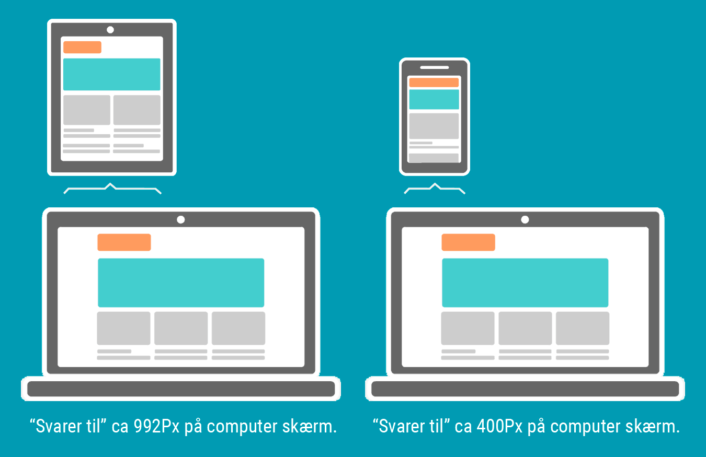
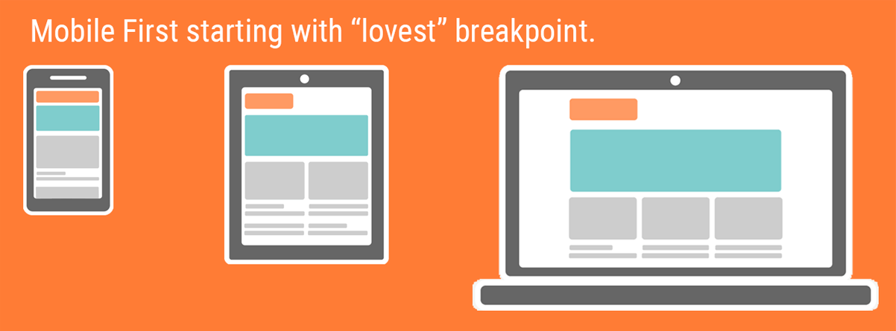
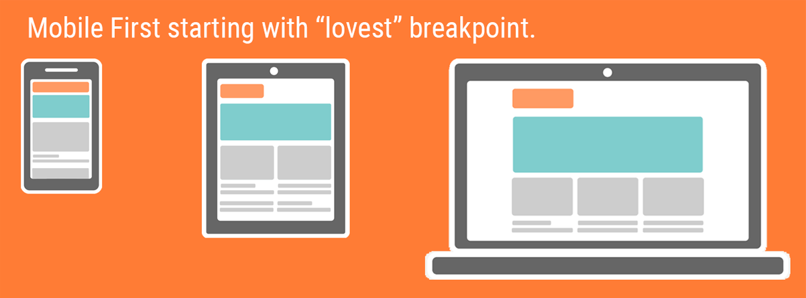

HTML vises også på mobile enheder
Dit website skal fungere på mobil-enheder, og mindre skærme.


Devices vs Desktop
Omkring 2012 skiftede den andel af enheder der tilgik Internettet og Websites, fra "desktops" (Computere), til mobile enheder (Devices).
I dag er det essentielt at din HTML ikke kun virker, men også er nemt at læse og navigere i på Mobile enheder.
Computere har oftest et "fysisk skærmområde", altså den faktuelle "størrelse" på minimum 15 tommer, (Inch'es).
Mobiltelefoner har på trods en mindre størrelse ofte lige så stor "opløsning" (Pixel-tæthed), altså samme opløsning på mindre område.
Begreber i Responsive Design
- Adaptive (Groft sagt et "skræddersyet design" til definerede skærmstørrelser)
- Responsive ("flydende og "device uafhængigt" "fits all", ikke så præcist?)
- Mobile First ("Design strategi" hvor man tager udgangspunkt i Mobile devices)
Tommer og Pixels?
Lidt om skærm-bredder og Viewports.
Skærmbredder er i høj grad afhængig af den udvikling der er i gang på Hardware og specielt Mobil markedet.
Mobiltelefoner og tablets kommer i et hav af størrelser og opløsninger, og kan vise HTML og APPs i både "Vandret" og "Lodret".
"Pixeltætheden" (ppi) er et udtryk for skærmens opløsning, og er ikke et udtryk for den fysiske størrelse. Mobiltelefoner har oftest lige så høj, eller højere "opløsning" end Computerskærme.
Du bruger “MediaQueries” til at angive det antal pixels der svarer til den fysiske bredde.

Opløsning vs "Screen size"
- Mobile Phones Også kaldt "small devices", pixel tæthed omkring 300ppi eller mere
- Tablets "Medium devices", pixel tæthed omkring 190ppi eller mere
- Desktops pixel tæthed 72ppi eller mere. (Macbook pro Retina 220.53ppi)
Media Queries
Om Breakpoints og Devices
Mediaqueries bruges til at angive det antal pixels på din Computer skærm, der svarer til den fysiske størrelse devicet har?
@media screen and ( max-width: 800px) Træder i kraft under 800px på din cumputer skærm.
@media screen and (min-width: 800px) Træder i kraft over 800px på din cumputer skærm.
Meta Viewport?
Hvis ikke du har “meta viewport” i dit head-tag så vil en nyere mobiltelefon vise dit website ud fra pixel tætheden (ppi) og IKKE “device-width”.
Eksempel (Træder i kraft under 800 Pixels):
@media screen and (max-width: 800px) {body{
background-color: red;
}
}
Mobile First
Et udtryk for den "strategi" du bruger når du starter et projekt?
 
